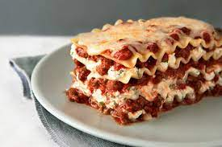

Alex's Lasagna

I don't really like lasagna that much but it was listed on the task as the first food to create a file for so I did it.
I have no idea what goes in lasagna so I'm making ingredients up
Ingredients
- 2lbs ground beef
- 2 tbsp olive oil
- 2-3 taco seasoning
- 1 large white onion chopped
- sheet noodle things
- tomato paste
- salt and pepper to taste
Directions
- Preheat oven to 375f.
- Put noodle sheets in large baking dish.
- Mix all ingredients together and make a paste.
- Bake for 35-40mins until noodle sheets are crispy on the edges.
Home